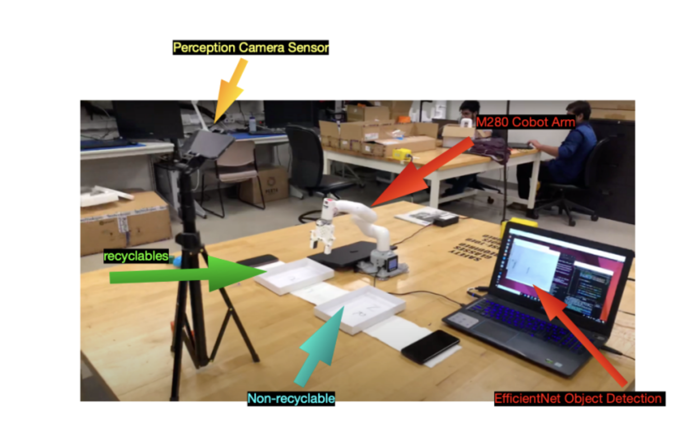

Sustainable Trash Classification using CNN, sorting with M280 Cobot
Prototype

Project Overview and Key Contributions:
- Developed and implemented a sophisticated trash classification system leveraging Convolutional Neural Networks (CNNs) for accurate identification of recyclable vs. non-recyclable items.
- Integrated the CNN model with an M280 Collaborative Robot (Cobot) to automate the physical sorting process.
- Designed and programmed the Cobot's pick and place operations, ensuring precise grasping, movement, and segregation of classified items into their designated bins.
- Trained the CNN model using a custom dataset of trash items, employing data augmentation techniques to improve model robustness and generalization.
- Responsible for the perception pipeline, including image acquisition from a camera, pre-processing, and feeding data to the CNN for inference.
- Implemented communication protocols between the vision system (running the CNN) and the M280 Cobot controller.
- Evaluated system performance based on classification accuracy, sorting speed, and reliability.